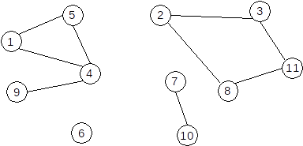

Definiție: Se numește graf neorientat o pereche ordonată de mulțimi G=(X,U), unde:
X este o mulțime finită și nevidă de elemente numite vârfuri sau noduri;U este o mulțime finită de submulțimi cu două elemente din X, numite muchii.Vom nota în continuare vârfurile cu valori între 1 și n – unde n este număru de vârfuri din graf, iar muchiile cu [x,y] sau (x,y), unde x și y sunt vârfuri și se numesc extremitățile muchiei.
Un vecin al unui vârf x este orice vârf y cu proprietatea că există muchia [x,y].
Două vârfuri între care există muchie se numesc adiacente.
Două muchii sunt incidente dacă au o o extremitate comună. Un vârf este incident cu o muchie dacă vârful este extremitate a acelei muchii.
Mulțimea muchiilor are proprietatea de simetrie: dacă [x,y] este muchie, atunci și [y,x] este muchie.
Conform definiției:
Exemplu: Fie G=(X,U), unde:
X={1,2,3,4,5,6,7,8,9,10,11}U={[1,4],[1,5],[2,3],[2,8],[3,11],[4,5],[4,9],[7,10],[8,11]}